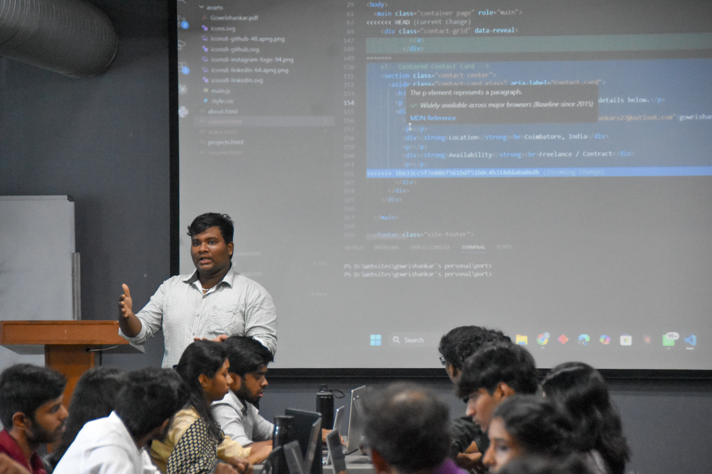
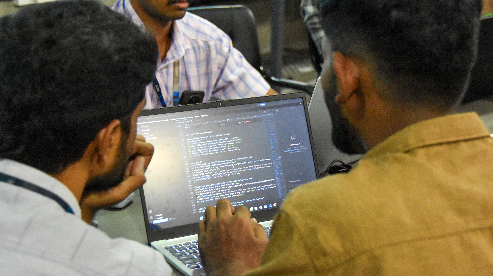
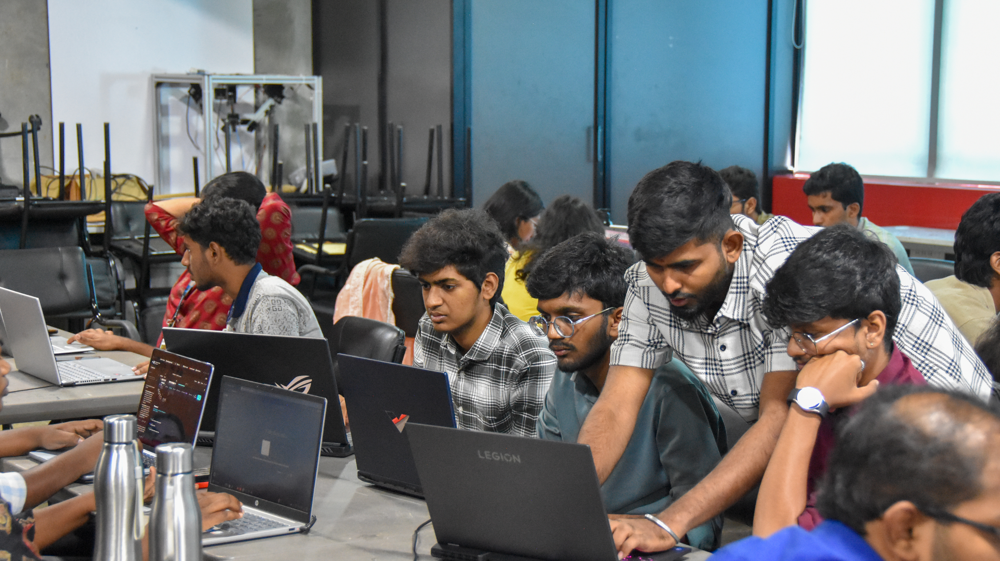
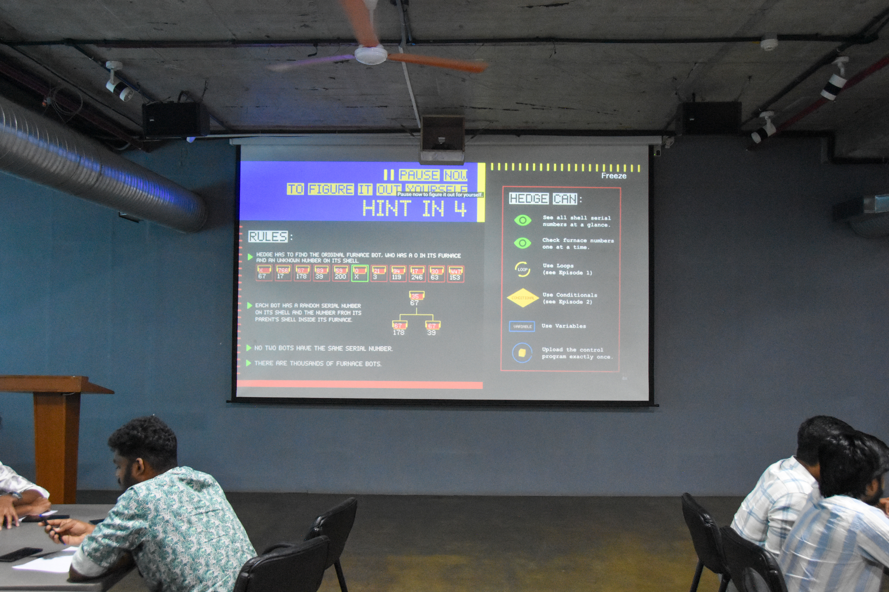
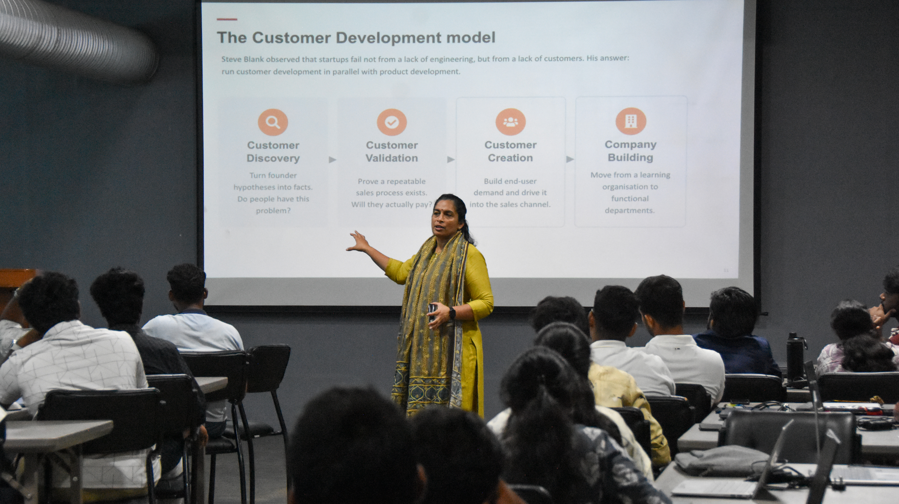

ProtoSem · Week 2
Computational Thinking & Product Development
From Creative Thinking to Coding, App Development and Design Thinking
Week 2 focused on developing computational thinking, programming fundamentals, mobile application development, and design thinking. Through five days of interactive sessions and hands-on activities, we learned how to transform creative ideas into structured solutions and user-focused products.





Week in action
Creative ideas turned into structured, user-focused solutions.
Fugaal – Creative Thinking & Personal Growth
- Participated in the interactive “Fugaal” learning session conducted by author Mukesh Shu.
- Explored creative thinking and innovative approaches to solving challenges.
- Learned to look at problems from different perspectives.
- Developed a growth mindset and understanding of continuous learning.
Think Like a Coder – EP05
- Learned the fundamentals of algorithms and structured problem solving.
- Practiced breaking complex problems into smaller logical steps.
- Improved computational thinking and algorithmic reasoning.
- Understood how logical thinking can be applied to programming.
Scratch Programming
- Explored block-based programming using Scratch.
- Learned programming concepts such as events, loops, conditions, and variables.
- Developed simple interactive games and animations.
- Improved logical thinking through hands-on programming.
MIT App Inventor
- Identified a real-world problem that could be addressed through a mobile application.
- Designed and developed a basic mobile application prototype.
- Worked on user interface, navigation, and application functionality.
- Gained practical exposure to mobile app development.
Design Thinking, Customer Discovery & Lean Startup
- Attended an interactive session conducted by Meera Ma'am.
- Learned the fundamentals of Design Thinking and user-centered problem solving.
- Explored Customer Discovery and understanding user needs.
- Learned the Lean Startup methodology and Build–Measure–Learn cycle.
- Understood the importance of developing and validating a Minimum Viable Product (MVP).
Roadmap
Week 2 Learning Journey
Day 1→Fugaal
Day 2→Think Like a Coder
Day 3→Scratch Programming
Day 4→MIT App Inventor
Day 5→Design Thinking
- Strengthened computational and logical thinking.
- Learned the fundamentals of algorithms and programming.
- Gained hands-on experience with Scratch and block-based programming.
- Explored mobile application development using MIT App Inventor.
- Learned how to identify and understand real-world user problems.
- Understood Design Thinking and Customer Discovery.
- Learned the Build–Measure–Learn approach and MVP development.
- Connected creative thinking with technical implementation.
Growth areas
Skills Developed
Creative Thinking
Computational Thinking
Algorithm Design
Programming Fundamentals
Scratch
Mobile App Development
MIT App Inventor
Problem Solving
Design Thinking
Customer Discovery
Lean Startup
MVP Development
Communication
Teamwork
← Back to ProtoSem